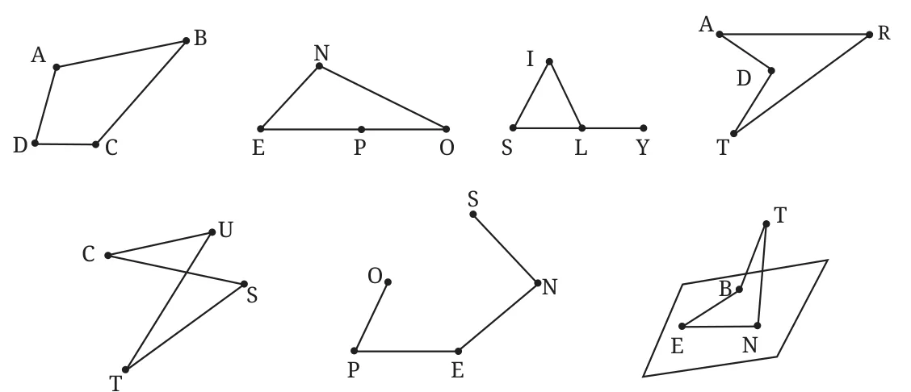
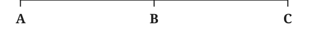
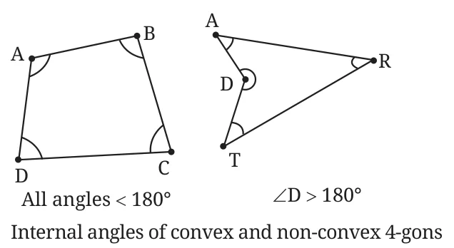
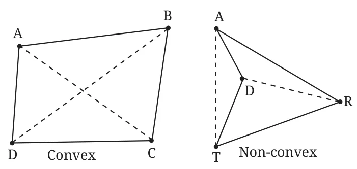
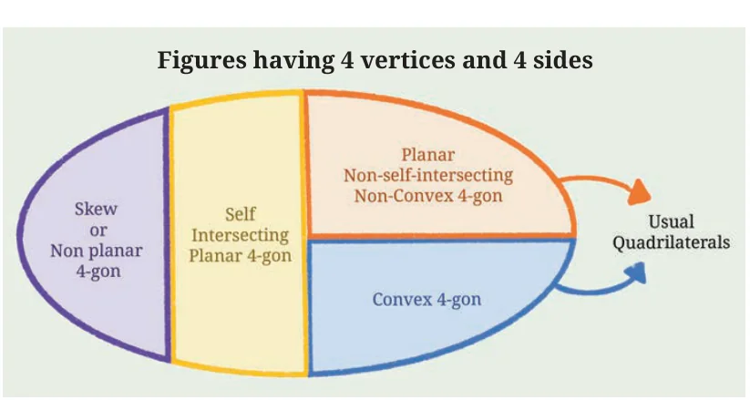
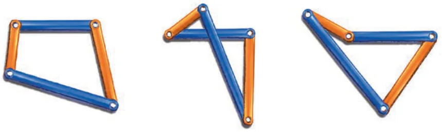

To prepare, let us first consider how we can define a triangle. Let A, B and C be three points. Can we say that \(\triangle ABC\) consists of points on the three line segments AB, BC, CA? Yes, provided A, B, C are not collinear. Otherwise, we just get a line segment: see Fig. 12.3.

When A, B, C are non-collinear, we call them the vertices of \(\triangle ABC\) and the three segments AB, BC and CA the sides of \(\triangle ABC\).
Take any 4 distinct non-collinear points A, B, C and D. Will segments AB, BC, CD and DA always form a quadrilateral as we visualise it? See figures NOPE, SILY, DART, CUTS, OPENS and BENT in Fig. 12.2 again. Do you see, OPENS that there are some subtle new issues to consider?
First, to rule out examples like NOPE and SILY, no three vertices should be collinear. Otherwise, the two adjacent sides formed by the three collinear vertices will be along the same line, giving a triangle like NOPE or a figure with overlapping sides like in SILY.
Second, to rule out examples like BENT, all four vertices should be in the same plane. Four-sided figures like BENT are called non-planar quadrilaterals. We will study only planar quadrilaterals (except in a few exercises).
Third, do we want to call CUTS a quadrilateral? The answer depends on what we decide! Ordinarily, CUTS is not considered a quadrilateral. If we want to include it, we call it a self-intersecting quadrilateral.
Can you come up with a definition that rules out self-intersecting quadrilaterals like CUTS? Answer: we should require that all the points of the quadrilateral, other than the vertices, must lie on exactly one side. Can you see how to rule out figures like OPENS?
Putting together all three requirements, we get the following definition.
Definition 1. Suppose A, B, C, D are four distinct points in a plane. Then the points on the 4 segments AB, BC, CD and DA are said to form quadrilateral ABCD if every such point other than A, B, C, and D lies on exactly one of these four segments.
Now that we have precisely defined a quadrilateral, let us give similarly precise definitions of familiar terms associated with a quadrilateral.
A, B, C, D are called the vertices of quadrilateral ABCD; segments AB, BC, CD, DA are its sides or edges; segments AC and BD are its diagonals. The two endpoints of a side are called adjacent vertices. Two sides with a common endpoint are called adjacent sides. A quadrilateral has 4 internal angles, each formed at a vertex by a pair of adjacent sides. Internal angles at adjacent vertices are called a pair of adjacent angles. How will you define opposite sides? Opposite angles? See Exercise Set 12.1, Q1.
Note that quadrilateral ABCD can also be denoted as BCDA, CDAB, DABC, DCBA, ADCB, BADC or CBAD but not by any other sequence of vertices. (Draw ABCD and trace the vertices in various orders to see why.)
When we refer to a quadrilateral, we always mean a planar non-self-intersecting quadrilateral, unless stated otherwise.
Convex Quadrilaterals
Should DART in Fig. 12.2 be considered a quadrilateral? It seems different from our usual mental picture of a quadrilateral because it has a dent, as if someone has taken a bite out of triangle ART! We call DART a non-convex quadrilateral.

A convex quadrilateral is one without a dent. How can we define this precisely? We can see in DART that at the dent at vertex D, the internal angle is more than \(180^\circ\). So we call a quadrilateral convex when all of its internal angles are less than \(180^\circ\).

There are other ways of testing convexity. For example, visually verify that the diagonals of a convex quadrilateral intersect while those of a non-convex quadrilateral don’t intersect.

4-gons that do not fit your mental image of a quadrilateral may look strange. Do we really need to care about, e.g., self-intersecting 4-gons? Yes, because they do occur in real life, such as in 4-bar linkages. Linkages are widely used mechanical devices with several interlinked bars. Some ends of these bars are fixed, while other interlinked ends are free to rotate around the fixed ones. Search the internet for a video showing how linkages move. Linkages can attain a range of configurations, including non-convex and self-intersecting figures, as shown below. So engineers have to take such figures into account.
